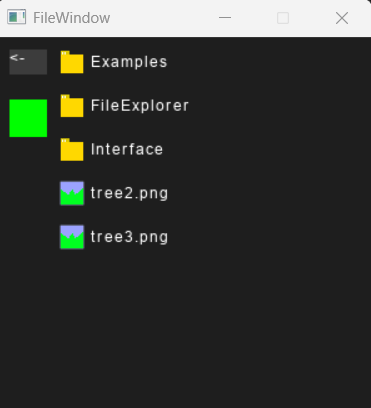
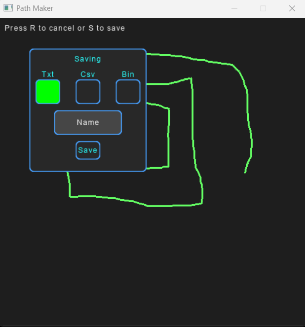

Framework C++
Jest to w uproszczeniu zestaw klas oraz miniprogramów, które razem tworzą bibliotekę C++
Elementy biblioteki:
- Wydajny Batch-Renderer 2D obsługujący kilkanaście funkcji renderowania
- Klasa obsługująca interfejs użytkownika nastawiona na efektywność i konfigurowalność
- Klasa zarządzająca teksturami pozwalająca na dynamiczne przeładowania w czasie trwania programu
- Klasa zarządzająca dźwiękami, również obsługująca dynamiczne przeładowanie, dźwięki stereo oraz dźwięki odległościowe
- Graficzny konfigurowalny eksplorator plików
- Graficzny program do tworzenia ścieżek dla SI
- Dynamiczne tworzenie czcionek z plików ttf oraz wczytywanie już wcześniej zdefiniowanych czcionek w tym opcjonalnie poprzez skanowanie tekstury bez gotowych wymiarów glifów
- Klasa zarządzająca scenami (Tworzenie, przełączanie, resetowanie)
- Biblioteka Geometryczna/AABB
- Klasa ułatwiająca zarządzanie mapą podzieloną na chunki
- Wiele pomniejszych funkcji pomocniczych, jak kamera, otrzymywanie koordynatów myszy itd.
Poszczególne elementy są szczegółowo opisane poniżej.
Architektura Renderera
Silnik renderujący wykorzystujący technikę grupowania poleceń do karty graficznej w większe paczki.
W ogólności pozwala on na renderowanie w 3 trybach:
- Tryb płaski
- Tryb standardowy
- Tryb Unifikowany
Tryb Płaski
Ten tryb renderuje tylko i wyłącznie teksturowane prostokąty wtkorzystuje on maksymalnie technikę batchowania
Zalety trybu płaskiego
- Zdecydowanie najwyższa wydajność renderowania
Wady trybu płaskiego
- Wymóg operowania dodatkowymi funkcjami jak FlatSetUp i Present
- Nie branie pod uwagę kolejności przesłanaiania
- Ograniczenie tylko do jednej funkcji renderowania
- Wymóg każdorazowago wywoływania funkcji SetUP przy dynamicznym wczytywaniu tekstur
Użyteczność
- Tile Mapy
- Struktury gdzie przesłanianie jest nieistotne
Tryb Standardowy
Typowy przypadek użycia renderera daje nieograniczony dostęp do wszystkich jego funkcji
Zalety trybu standardowego
- Wysoka wydajność przy sporadycznym zmienianiu funkcji renderujących
- Najwyższa wydajność przy rysowaniu nieteksturowych kwadratów
Wady trybu standardowego
- Ogromne spadki wydajności przy częstych zmianach funkcji renderujących wynikające ze zmiany aktualnie używanego shadera
Użyteczność
- Wszystkie aspekty grafiki 2D gdzie zestaw spritów nie wymaga częstego przełączania funkcji renderujących
Tryb Unifikowany
Używa jednego wielkiego shadera do renderowania każdej istniejącej funkcji
Zalety trybu unifikowanego
- Zerowe opóźnienie przy zmianie funkcji renderującej
- Stabilne i przewidywalne czasy renderowania
Wady trybu unifikowanego
- Narzut ilości renderowanych wierzchołków dla wielu funkcji przewyższający faktyczną ich potrzebę
Użyteczność
- W stabilnym programie gdzie stabilność jest ważniejsza od agresywnych optymalizacji
Funkcje Renderujące
Wszystkie Funkcje wspierają kanał alpha. Każda z tych funkcji ma uniwersalny odpowiednik:
- Renderowanie kolorowego prostokątu
- Renderowanie kolorowego rotowanego prostokątu
- Rysowanie linii od dowolnej grubości i kolorze od punktu a do punktu b
- Renderowanie teksturowanego prostokątu
- Renderowanie teksturowanego rotowanego prostokątu
- Renderowanie części tekstury prostokątu
- Renderowanie rotowanej teksturowanej części teksturytektury prostokątu
- Renderowanie kolorowego koła
- Renderowanie teksturowanego koła
- Renderowanie kolorowego prostokątu z zaokrąglonymi rogami
- Renderowanie teksturowanego prostokątu z zaokrąglonymi rogami
- Renderowanie tekstury lub jej części z nałożonym filtrem koloru
- Renderowanie tekstury lub jej części z drugą teksturą jako maską
- Renderowanie obwódki/granicy wokół prostokątu zaokrąglonej lub ostrej
Dodatkowe funkcje
- Clipping (Rysowanie tylko na części ekranu)
- Zmienianie aktualnego rozmiaru rysowania (Dostosowywanie się do zmieniającego się rozmiaru okna)
Interfejs Użytkownika
Moduł zarządzający hierarchią elementów graficznych (UI), na który składa się pięć głównych typów kontrolek:
- Button: Klasa bazowa i element pasywny (wyświetlający tło i tekst)
- Click Box: Element interaktywny rejestrujący zdarzenia wejścia (kliknięcia)
- Text Box: Pole edycyjne przyjmujące wejście tekstowe od użytkownika.
- Pop Up Box: Element tymczasowy z odgórnie ograniczonym czasem życia
- Slider: Suwak pozwalający na manipulację wartością w wyznaczonych granicach osi X lub Y.
Każdy z przycisków dziedziczy bazowe cechy od zwykłego przyciku wszystkie są modyfikowalne w dowolnym momencie działania programu są to kolejno:
- Identyfikator: Unikalna nazwa instancji zapobiegająca duplikatom.
- Geometria i Stan: Wymiary, widoczność (flaga ukrycia) oraz typ krawędzi (ostre/zaokrąglone).
- Kolor tła lub tekstura, a także obecność, grubość i kolor obramowania.
- Typografia: Wyświetlany tekst, rodzaj czcionki, wyrównanie (środek/lewo/prawo), interlinia oraz korekta przesunięcia tekstu (offset X/Y)
- Interakcja: Filtr koloru oraz efekt dźwiękowy aktywowany przy kolizji kursora z elementem (Hover/Click).
Dodatkowo każdy przycisk dziedziczący posiada kilka swoim unikalnych modyfikowalnych cech.
Sam interfejs użytkownika pozwala również na kilka ustawień globalnych jak:
- System warstw (Z-Order)
- Konsumpcja zdarzeń (Input Blocking): Blokowanie propagacji kliknięcia do elementów znajdujących się pod najwyżej renderowaną kontrolką.
- Wyzwalanie akcji (Trigger Mode): Możliwość zmiany rejestrowania kliknięcia z wciśnięcia (OnPress) na zwolnienie przycisku myszy (OnRelease).
Aby zoptymalizować zarządzanie układem kontrolek, zaimplementowano trzy struktury pomocnicze:
- Lista szablonowa elementów pozwalająca na zdefiniowanie elementu nadrzędnego i rozwijanie listy elementów podrzędnych.
- Sekcja Interfejsu: Kontener grupujący małe zbiory elementów ułatwiający zarządzanie ich widocznością.
- Sekcja Tagowana: System zarządzania rozbudowanymi grupami elementów za pomocą tagów.
Menedżer Zasobów Graficznych
Klasa przechowująca i zarządzająca wszystkimi wczytanymi teksturami jak i ich usuwaniem i wczytywaniem przechowuje wszystkie tekstury w tablicy hashującej (C++ unordered_map).
Pojedynczy obiekt tekstury zawiera:
- Wymiary w pikselach oryginalnego obrazu z którego została stworzona
- Dodatkowy filtr przezroczytosci (kanał alpha)
- Unikalne ukryte id tekstury niedostępne dla użytkownika wykorzystywane w renderowaniu
- Unikalne id batchowania do płaskiego renderowania
- Datę ostatniej modyfikacji na dysku
Poza zarządzaniem tekstur ta klasa pozwala również na dynamiczne przeładowywanie tekstur z opcjonalnym usuwaniem już nieistniejących tekstur, wczytywaniem nowych oraz aktualizacją stanu aktualnych. Możliwe jest również podzielenie jednej tekstury na kilka pomniejszych.
Menedżer Dźwięków
Posiada dokładnie te same użyteczności co klasa zarządzajaca teksturami (Poza dzieleniem) z tym że wspiera on również granie dźwięków środowikowych i kanały stereo.
Menedżer Scen
Pozwala w uproszczeniu na przełączanie się pomiędzy odrębnymi częściami aplikacji lub gry każda scena dziedziczy interfejs po bazowej scenie i wymusza implementację własnych funkcji czyli:
- Init: Alokacja i inicjalizacja zasobów startowych
- Logic Update: Aktualizacja mechaniki (AI, fizyka) w stałym kroku czasowym
- Frame Update: Przygotowanie danych do renderowania
- Input: Przetwarzanie i dystrybucja zdarzeń wejściowych
- Render: Przekazywanie danych do renderera
- Clear: Dealokacja i czyszczenie pamięci przed opuszczeniem sceny
Przełączenie się pomiędzy scenami automatycznie resetuje porzuconą scenę.
Dodatkowo istnieje możliwość przechowywania zmiennych wystepujących pomiędzy scenami na zasadzie dynamicznego typu danych oznacza to że można przenosić pomiędzy zmianą sceny każdy możliwy typ danych.
Eksplorator plików

Prosty graficzny eksplorator plików służący w zasadzie tylko i wyłącznie do pobrania ścieżki, która jest następnie zwracana jako string.
Wspiera on dodatkowo:
- Odfiltrowywanie niechcianych typów plików np .jpg, .exe
- Ustawianie prędkości przewijania
- Zdefiniowanie własnych tekstur dla danego typu plików
- Ustawienie własnej wielkości okna
Kreator ścieżek

Graficzne narzędzie tworzące ścieżki do użycia np. w ruchach elementów w grze, gdzie ścieżki nie da się obliczyć matematycznie.
Wspiera on dodatkowo:
- Kompresję punktu startowego i końcowego, gdy pojawia się w nich ciąg pustych punktów
- Ustawienie, w ilu klatkach ma rysować się ścieżka
- Kompresję punktów niezmieniających położenia ścieżki
- Zapis i odczyt w formatach txt, csv, bin
- Ustawienie własnej wielkości okna